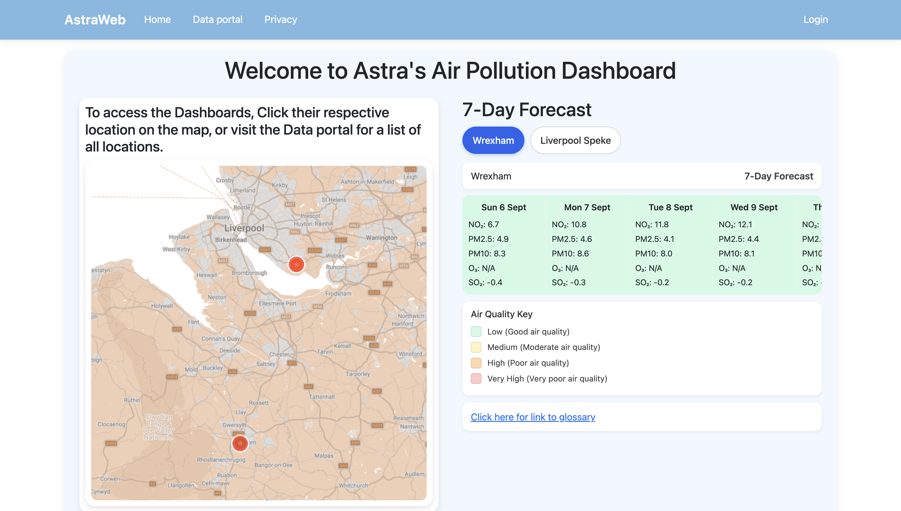

AstraWeb Air Pollution Dashboard ↗
A web-based air pollution dashboard that allows users to explore air-quality information for Wrexham and Liverpool Speke. The website includes an interactive location map, seven-day pollution forecasts and a colour-coded air-quality guide.
View live website ↗
HTML
CSS
JavaScript
Data Visualisation